Gallery
Our work in pictures.
Field visits, practical activities and community engagements. Select a photo to open it at full size.
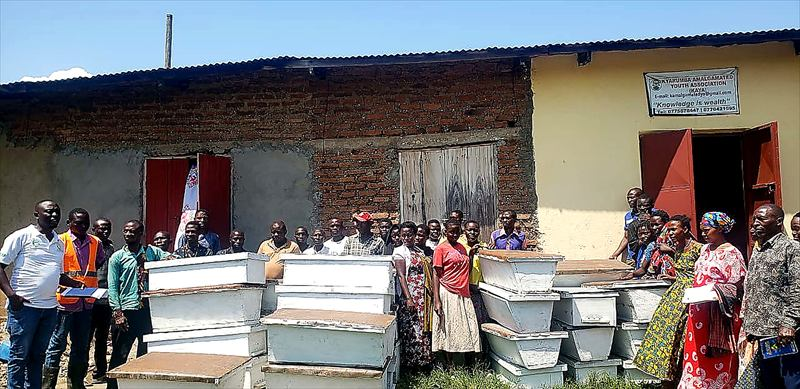

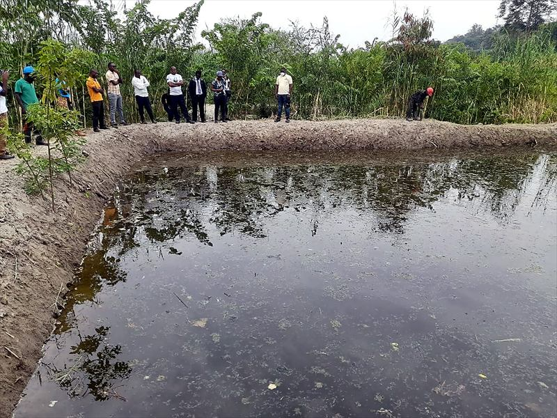

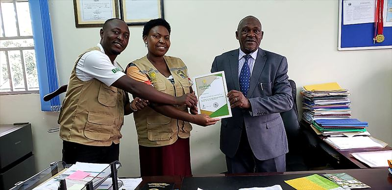
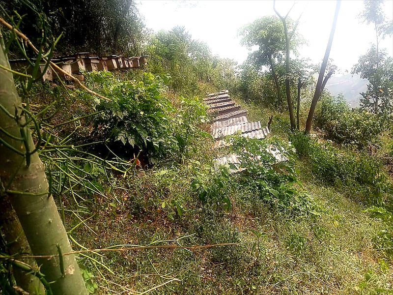
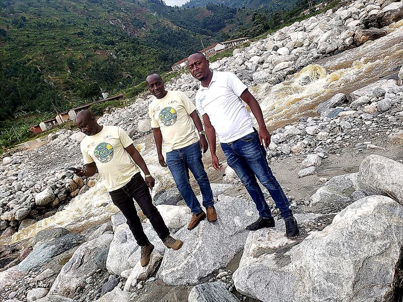
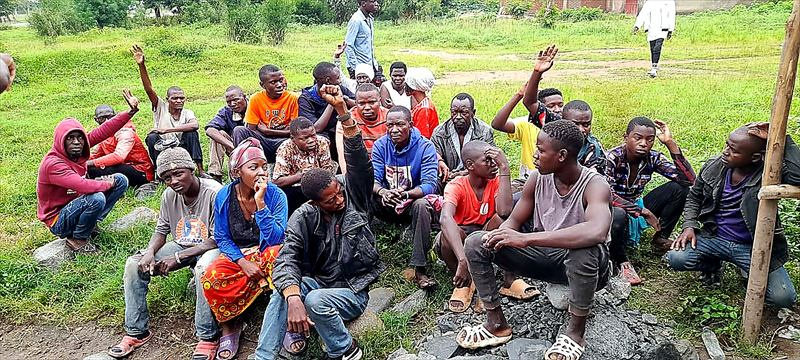

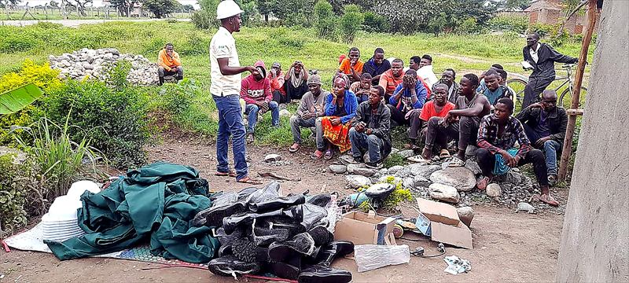
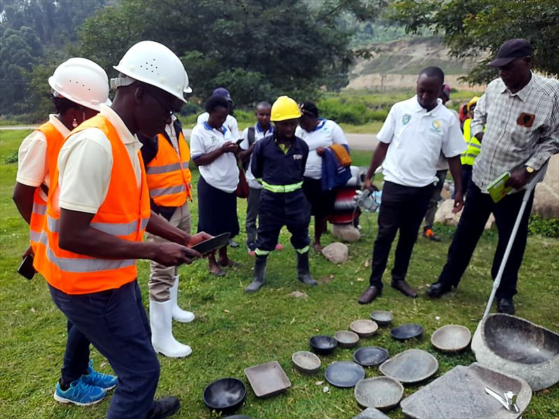
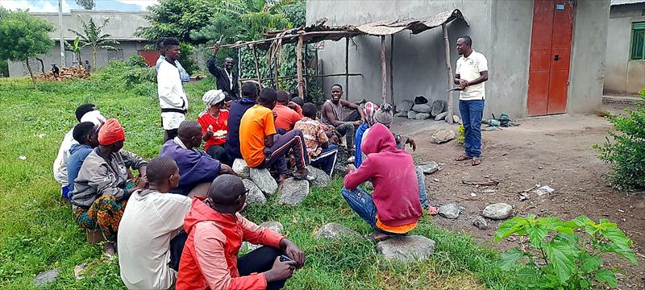


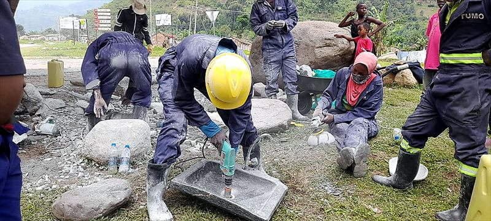
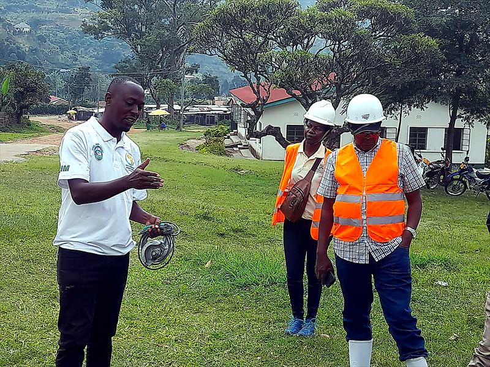

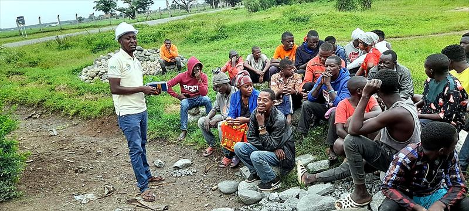

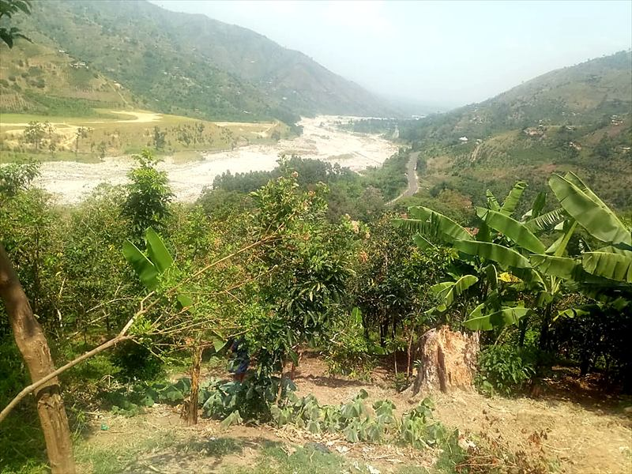

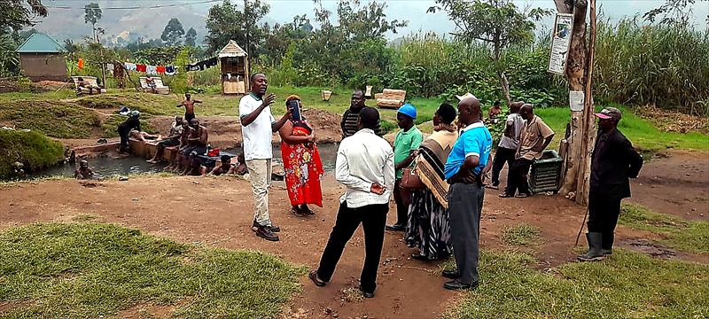

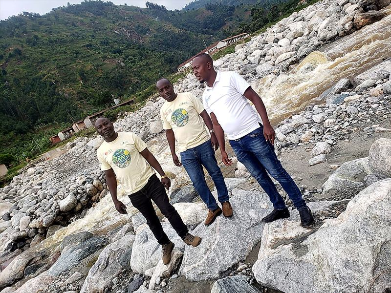


Get in touch
Talk to us about our work and partnerships.
We welcome conversations with communities, government, development partners, the private sector and research institutions.